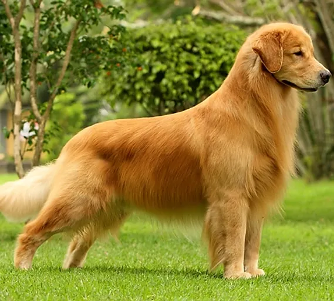
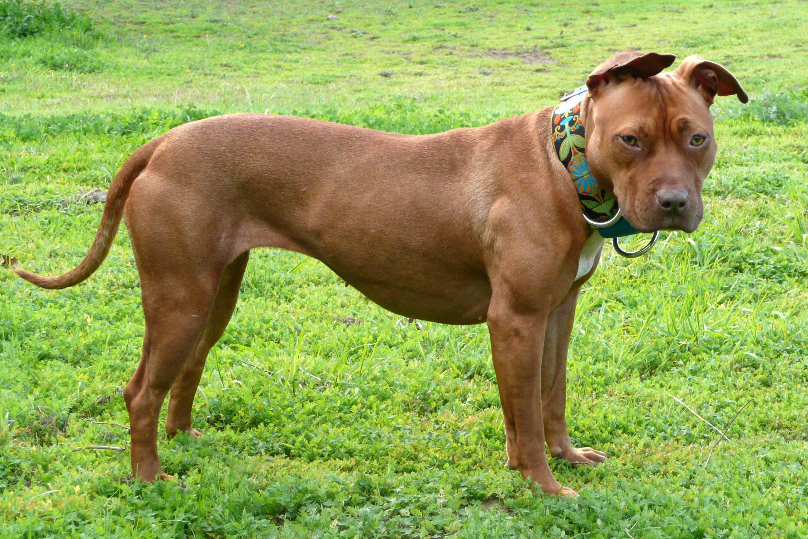
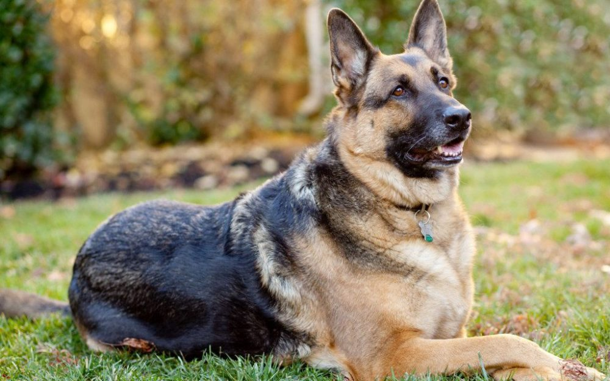
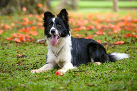

Raças de cachorros
A grande diversidade de raças de cachorro que existe hoje é resultado de cruzamentos feitos pelo homem.
Muitas delas foram criadas na busca por cachorros que correspondessem a características físicas específicas
e com uma personalidade adequada à função que deveriam desempenhar. Ao longo de 100 mil anos, quando surgiu
o cachorro, descendente do lobo cinzento, as cruzas resultaram em mais de 400 raças de cachorro. Aqui você
encontra um guia completo com as principais raças de cachorro.
Clique nas imagens para saber mais sobre as raças.
Golden Retriever

Pit Bull

Pastor Alemão

Boder Collie
